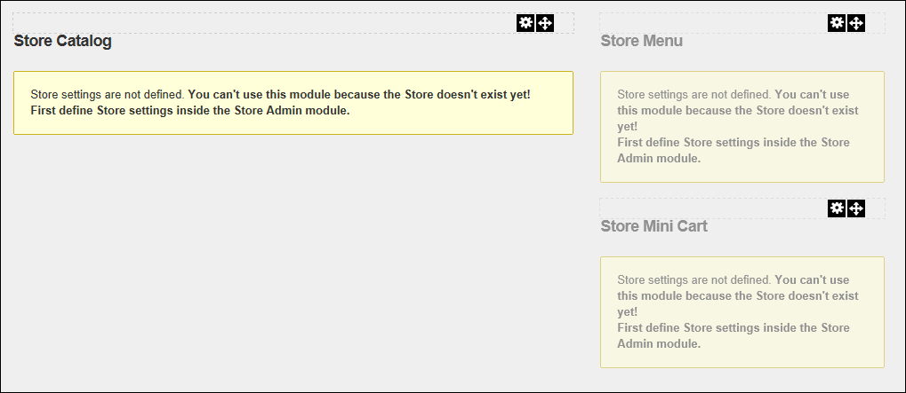
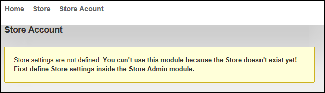

Configuring the Store Module
How to configure the five (5) store modules to enable you to begin adding categories and products to the Store modules. For more comprehensive installation information, download the DNN Store Installation Guide from http://dnnstore.codeplex.com/releases/view/61524. Restricted to Administrators only.
See "Important Information About Roles" before configuring the Store.
Step 1: Creating the Store
- Add a new page (E.g. Store) and grant page permission to the roles or users who can use the store (See "Adding a New Page"). For Example, you might choose to grant View Page permissions to all users to enable all site visitor to browse the products in your store before they become a registered user. Alternatively, you may choose to set the page or module as only viewable by registered users. This will depend upon your chosen business model. Another option is to only make the page visible to customers once you have populated your store.
- Add the Store Catalog module to a wide pane.
- Add the Store Menu to a pane that is preferably either to the left or right or the .
- Add the Store Mini Cart to the same pane as the Store Menu.
Note: The warning messages shown below which read "Store settings are not defined.You can't use this module because the Store doesn't exist yet! First define Store settings inside the Store Admin module." are only displayed to SuperUsers.

Step 2: Configuring the Store Account module where Customers manage their Account and Orders
- Add a new page (E.g. Store Account) where customers can access their account information, set the page as visible to users that are authorized to go shopping.
- Add the Store Account module to a full width or wide pane.

Step 3: Creating the Store Administration Area
- Add a new page (E.g. Store Admin), restricting View Permissions to the users and roles that can manage orders (such as managing order status), manage the full product catalog (includes managing categories, products and reviews) and manage store information (includes important and private business information such as your PayPal/Authorize.net banking details). In the below example, new roles called "Catalog Manager" and "Order Manager" have been created for this store. See "Adding a New Page"

- Add the Store Admin module to the page. See "Adding a New Module (RibbonBar)"
Tip: You can use addition instances of these modules on other pages as you like. For example, you might choose to add a second Store Menu module to the Home page of your site to promote sales.
Step 4: Linking the Store Modules together and Setting Additional Permissions
-
See "Setting Store Info"
Step 5: Setting taxation and shipping rates.
-
See "Managing Taxation on Orders"
-
See "Adding Shipping Rates"
Step 6: Add product categories and products to your store.
-
See "Adding a Product Category"
-
See "Adding a Product"